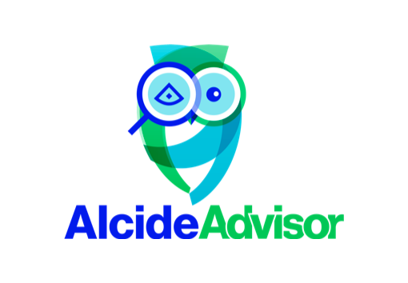

In this tutorial we will learn about Alcide Kubernetes Advisor, and how we can implement continuous security and cluster hygiene for one or more Kubernetes clusters.

Alcide Advisor is an agentless Kubernetes audit, compliance and hygiene scanner that's built to ensure a friction free DevSecOps workflows. Alcide Advisor can be plugged in early in the development process and before moving to production.
With Alcide Advisor, the security checks you can cover includes:
- Kubernetes infrastructure vulnerability scanning.
- Hunting misplaced secrets, or excessive privileges for secret access.
- Workload hardening from Pod Security to network policies.
- Istio security configuration and best practices.
- Ingress Controllers for security best practices.
- Kubernetes API server access privileges.
- Kubernetes operators security best practices.
- Deployment conformance to labeling, annotating, resource limits and much more ...
If you already have a running kubernetes cluster you can work with you can skip this step
For this tutorial you will need a Kubernetes cluster with enough permissions to deploy resources into it.
- Install and Set Up kubectl.
- Install Minikube, or any working Kubernetes Cluster
- Install Helm
- Create and regenerate Slack API tokens

Clone Alcide Advisor Git repo
cd /tmp
git clone https://github.com/alcideio/advisor.git
Go to the Helm chart named cluster-job and edit values.yaml file
cd advisor/deploy/charts/alcide-advisor-cronjob/
vi values.yaml
Find the next lines and set your Slack Channel and Token:
slack:
channel: <Your_Slack_Channel>
token: <Your_Slack_API_Token>
Go to your Slack Channel and download the scan.html and review the result across the various categories.
Positive
Note that if your didn't change the default configuration then the Advisor's scan would run every 1 minute

To uninstall the Helm Chart and delete the related files, simply run this:
helm uninstall advisor-job
cd /tmp
rm -rf advisor/

CI+CD Integration samples
See https://github.com/alcideio/pipeline
GKE Multi-cluster Scan Example